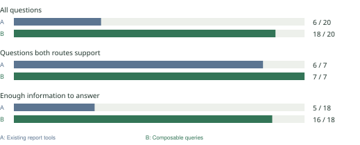

A better way to ask Daybook about your money
B answered 18 of 20 questions correctly. A answered 6.
Same made-up business records, same Gemini model, one try per question.
You ask
A finance question
AI chooses
A checked query
Code answers
Database + exact math
Query means a read-only question for the database. The model cannot post entries or run
arbitrary SQL.
A is a fixed menu: choose an existing report. B uses checked building blocks: combine
dates, accounts, vendors and grouping.

| Route |
Raw machine score |
After required review |
| A: Existing report tools |
5 / 20 |
6 / 20 |
| B: Composable queries |
18 / 20 |
18 / 20 |
What this supports
Use B as the candidate for the next product checks.
No observed boundary violation or confidently wrong financial answer in B. Blocked and unsupported
answers still count as misses. This small test does not prove every future question will work. Review
was by an internal AI agent, not an independent human accountant.
Three examples explain the result
1. Vendor + expense category
How much Office supplies expense did we record with Maple Stationery from April through June?
B answered $400, keeping both filters and excluding travel and payments of old bills. A asked
the user to narrow the question: an honest limitation, but not a completed answer.
2. Count transactions correctly
A journal is one recorded transaction, possibly with several account lines. April had $1,540
across four journals. One had two expense lines. $1,540 ÷ 4 = $385.
B was right. The raw scorer compared account codes literally; a separate audit proved that its
Operating expenses group contained exactly all five expense accounts. Primary 18/20 stays
unchanged. The separately audited sensitivity is 19/20.
3. A blocked instruction is still a missed answer
B’s hiring what-if plan was rejected before database execution. A’s monthly-expense trend also
produced an invalid plan. Both stay failures. Later product/parser repairs need separate verification
and do not inherit these scores.
Method and cost
Expected answers were written first and checked with separate arithmetic code. Saved plans ran against
real PostgreSQL. We checked scope and numbers, then reviewed all 40 outcomes.
| Phase |
Attempts |
Tracked cost |
| Setup |
1 |
$0.0023451 |
| Development |
16 |
$0.0326293 |
| Holdout |
40 |
$0.1019638 |
$0.1369382 total; 57 attempts; no unknown reservations. Usage estimate, not an invoice.
Median provider time: A 1.55s, B 2.15s. Database replay is not hosted end-to-end latency.
Separate category experiment, not pooled: semantic categories 33/33 for both; category plus taught
preference Gemini 33/33 and Jev 31/33.
Category evidence.
Only 20 purpose-built questions; no statistical-superiority or universal-accuracy claim. Frozen study
source ae6814f6ffb7. No automatic deployment.
Appendix: all 20 paired outcomes